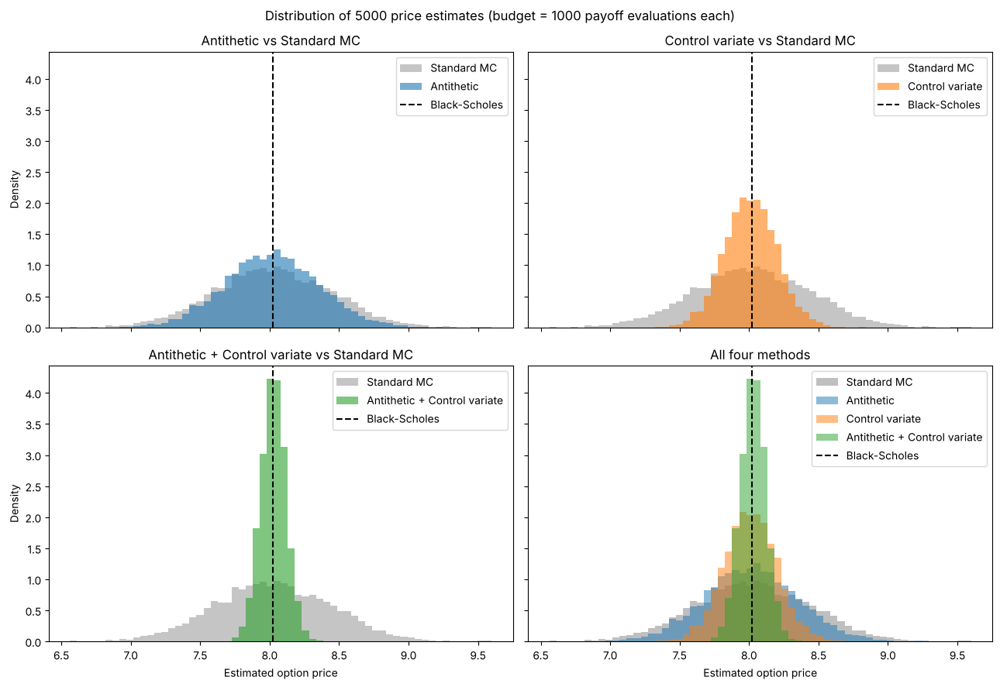
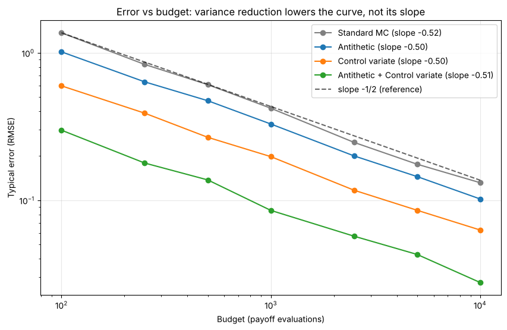

Sebastian Alexander Escurra Carmelo
A Monte Carlo simulation gives a different answer every time you run it. Price the same option twice, with the same number of random draws, and you get two different prices. This noise is the main cost of the method. The obvious fix, simulating more, is slow: to cut the error in half you need four times as many simulations.
So here is a more useful question: can we get a more precise answer for the same amount of computing? I tested two classic techniques on a European call option, and then used both together. For each of the first two I computed how much it should help, and then measured how much it did.
The option is a European call with today’s stock price 100, strike 105, one year to maturity, interest rate 5% and volatility 20%. Its price is the average payoff, discounted back to today.
The Black–Scholes formula gives the exact price, 8.0214. I use it only as a yardstick, to check the simulations. Standard Monte Carlo works like this: draw random numbers, turn each into a possible stock price at maturity, compute the discounted payoff, and average. Every method in this article gets the same budget of 1,000 payoff evaluations.
One run of standard Monte Carlo gave 7.49, which is 0.53 away from the exact price. Its standard error was 0.40 and its 95% confidence interval was (6.71, 8.28). The interval contains the exact price, so it is honest, but it is wide. That is the problem to fix.
For every random number Z I also use its mirror image, −Z. If Z gives a high stock price, −Z gives a low one. The two payoffs tend to move in opposite directions, and averaging each pair cancels part of the noise. This technique is called antithetic variates.
To keep the budget at 1,000 payoffs, I use only 500 random numbers, because each one gives two payoffs.
How much should it help? If ρ is the correlation between the payoff of Z and the payoff of −Z, the variance of the estimate is multiplied by 1 + ρ. I measured ρ = −0.368 on a large sample of 200,000 random numbers, so the factor is 0.632. That predicts about 37% less variance.
There is one quantity whose true average we know exactly: the discounted stock price at maturity. Its true average is simply today’s price, 100. In my sample the average came out at 99.37, a little too low. That means my sample had slightly too few high stock prices, so my average payoff is probably too low as well, and I correct it upwards. The correction is:
estimate = payoff average − β × (stock average − 100)
Here β is the slope of the line that predicts the payoff from the stock price. This technique is called a control variate. It uses the same 1,000 random numbers as the standard method, so any improvement comes only from the correction. In my first run the estimate moved from 7.49 to 7.84, and the standard error dropped from 0.40 to 0.19.
How much should it help? If ρ is the correlation between the payoff and the stock price, the variance is multiplied by 1 − ρ². On the same large sample I measured ρ = 0.891, so the factor is 0.206. That predicts about 79% less variance. The link between payoff and stock price is strong for a call option, which is why this works well here.
The fourth method applies the control-variate correction to the antithetic pairs. For each pair I average the two payoffs and the two stock prices, and then correct as before. In my first run it gave 7.98, with a standard error of 0.09.
One run is just one random sample, so its error is mostly luck. A good method can still have a bigger error in a single run. To see which method is really more precise, I repeated the whole experiment 5,000 times, always with a budget of 1,000 payoffs, and looked at how much each method’s price jumps around.

| Method | Variance | Variance reduction | Times smaller | Typical error | 95% interval contains the price |
|---|---|---|---|---|---|
| Standard | 0.1741 | 0% | 1.0× | 0.417 | 95.1% |
| Antithetic | 0.1118 | 36% | 1.6× | 0.334 | 94.6% |
| Control variate | 0.0351 | 80% | 5.0× | 0.188 | 94.8% |
| Both | 0.0082 | 95% | 21.2× | 0.091 | 93.7% |
The two predictions held up. For the mirror trick I predicted 37% less variance and measured 36%. For the control variate I predicted 79% and measured 80%. Both together cut the variance by 95%, which is about 20 times smaller than standard Monte Carlo, and the typical error falls from 0.417 to 0.091. This is the narrowest histogram in Figure 1.
The last column checks the error bars. A 95% confidence interval should contain the exact price about 95% of the time, and all four methods are close to that. The combined method is slightly below, at 93.7%.
Theory says the typical error of Monte Carlo shrinks like 1/√budget. On a log-log plot that is a straight line with slope −0.5. Figure 2 shows the typical error for budgets from 100 to 10,000 payoffs, with 500 repeated experiments for each budget. All four methods have a slope between −0.50 and −0.52.

So the techniques do not change the rate of convergence. They reduce the error by a constant factor, which shifts the whole curve down.
Always report a Monte Carlo price with an error bar, because a single price without one means little. And the variance reduction techniques are worth using: with the same budget, the combination gave a variance about 20 times smaller than standard Monte Carlo.